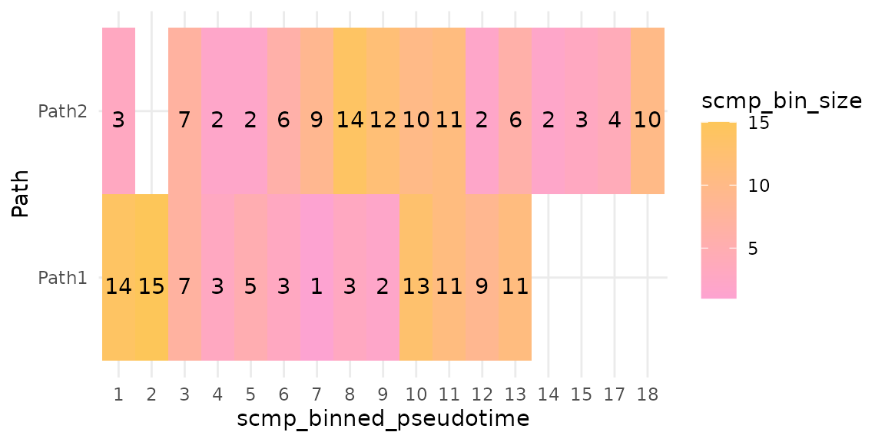
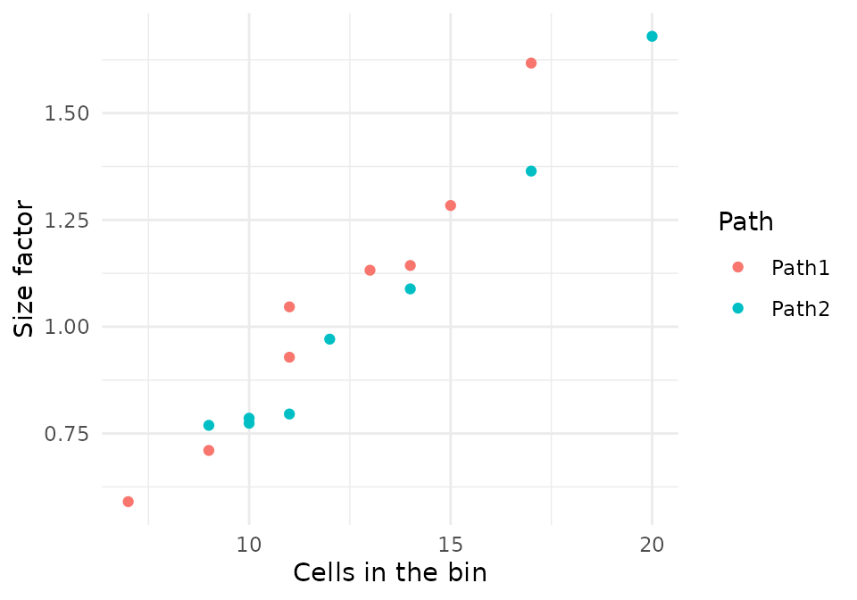
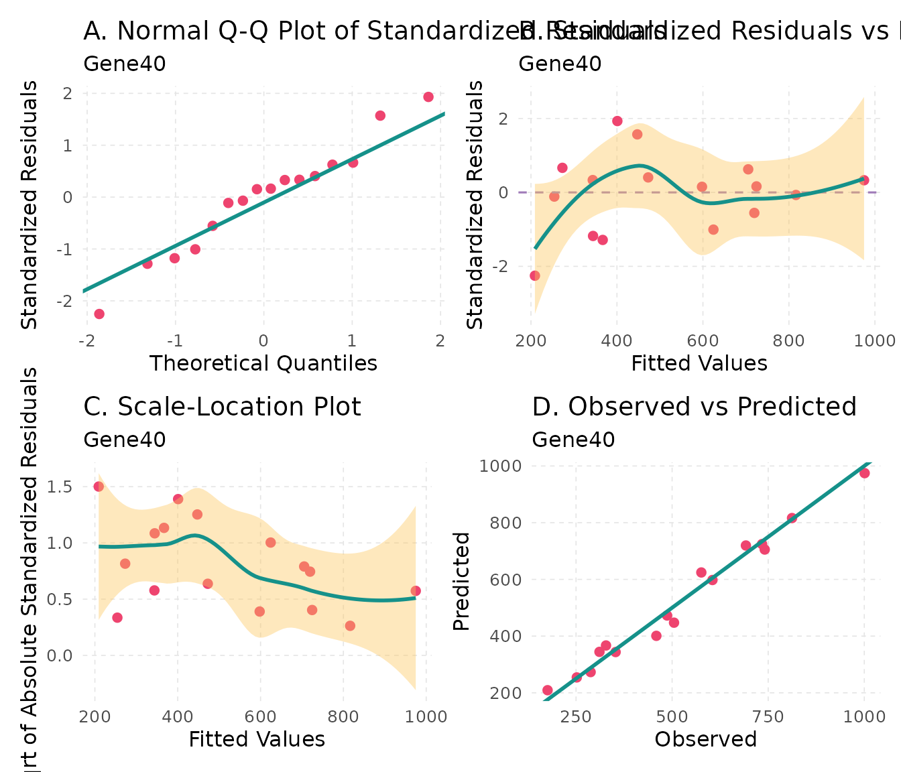

Abstract
This vignette explains the model that scMaSigPro fits and the settings of each step: the bins, the polynomial and its dummies, the reference path, the negative binomial distribution and its theta, the size-factor offset, the link, the test of each gene, the selection of terms and the gene lists. On a simulated data set with a known truth, it measures how the main settings change the genes found.
The data
The examples use splat.sim, the bifurcating trajectory
of the Quick
start vignette: 200 cells on two paths, Path1 and
Path2, with the simulated step of each cell as its
pseudotime. splatter (Zappia et al. 2017)
stores how it simulated each gene; a gene whose differential expression
factor (DEFacPath1, DEFacPath2) is not 1 on a
path changes along that path.
library(scMaSigPro)
library(SingleCellExperiment)
library(ggplot2)
data("splat.sim", package = "scMaSigPro")
truth <- rowData(splat.sim)
changes <- truth$DEFacPath1 != 1 | truth$DEFacPath2 != 1
names(changes) <- rownames(truth)
sum(changes)
#> [1] 56
scmp_ob <- as_scmp(splat.sim,
verbose = FALSE,
additional_params = list(
labels_exist = TRUE,
exist_ptime_col = "Step",
exist_path_col = "Group"
)
)Bins
A single cell holds few reads of each gene, and many of its counts are zero. scMaSigPro therefore pools the cells of each path into bins along pseudotime and adds up their counts into a pseudo-bulk count per bin, which raises the signal-to-noise ratio; the bins, numbered in order along pseudotime, become the time points of a time course, as in maSigPro (Srivastava et al. 2024, sec. 2.1).
sc.squeeze() divides the pseudotime range of each path
into bins of equal width. Each bin is closed on the left and open on the
right, except the last bin of a path, which is closed on both ends, so a
cell on the border of two bins goes to the later one. The number of bins
comes from a histogram rule (bin_method), applied to the n
cells of the path:
-
"Sturges"(the default): log2(n) + 1 bins (Sturges 1926); -
"Sqrt": the square root of n; -
"Rice": 2 n1/3; -
"Doane": Sturges’ rule plus a term for the skewness of the pseudotime (Doane 1976); -
"Freedman.Diaconis"and"Scott.Normal": bins of width 2 IQR / n1/3 and 3.49 sd / n1/3(Freedman and Diaconis 1981; Scott 1979), turned into a number of bins by dividing the range of the pseudotime by the width.
The number of bins is then multiplied by the drop factor
drop_fac (at least 0.3; below 1 for fewer, wider bins) and
rounded up. For data with many zeros, the article recommends a lower
drop factor, which gives fewer bins with more cells each; it also
suggests the rule of Rice for pseudotime values that span a broad range
and that of Doane for skewed ones (Srivastava et
al. 2024, sec. 4). The number of bins of each rule for the two
paths of splat.sim:
rules <- c(
"Sturges", "Sqrt", "Rice", "Doane", "Freedman.Diaconis", "Scott.Normal"
)
sapply(rules, function(rule) {
table(cDense(sc.squeeze(scmp_ob, bin_method = rule))$Path)
})
#> Sturges Sqrt Rice Doane Freedman.Diaconis Scott.Normal
#> Path1 8 10 10 9 5 5
#> Path2 8 11 10 8 5 5Bins of equal width hold different numbers of cells where cells are
dense or sparse along the pseudotime. split_bins = TRUE
divides the bins of a path that hold more cells than the mean plus the
standard deviation of its bin sizes, and prune_bins = TRUE
removes those that hold fewer than the mean minus the standard deviation
(Srivastava et al. 2024, sec. 2.2).
fill_gaps renumbers the bins after pruning, and
drop_trails cuts the longer paths to the binned pseudotime
of the shortest.
split_ob <- sc.squeeze(scmp_ob, split_bins = TRUE)
table(cDense(split_ob)$Path)
#>
#> Path1 Path2
#> 13 16
plotBinTile(split_ob)
Fewer, larger bins give each pseudo-bulk count more cells and the model fewer points; more, smaller bins the reverse. A polynomial of degree d has d + 1 coefficients per path, so each path needs more than d + 1 bins to leave residual degrees of freedom for the test.
The model
A polynomial in pseudotime per path
sc.set.poly() builds the design of the model of maSigPro
(Conesa et al. 2006; Nueda et al. 2014).
With two paths and a polynomial of degree 2, the expected count
of a gene in a bin at binned pseudotime
is modelled as
where is a dummy variable, 1 for the bins of the second path and 0 for those of the reference path (Srivastava et al. 2024, sec. 2.3). , and describe the profile of the reference path; , and are the differences of the second path from it, in level, slope and curvature. With more paths, every path but the reference gets a dummy and its products with the powers of .
scmp_ob <- sc.squeeze(scmp_ob)
scmp_ob <- sc.set.poly(scmp_ob, poly_degree = 2)
showPoly(scmp_ob)
#> [1] "beta0 + beta1*Path2vsPath1 + beta2*scmp_binned_pseudotime + beta3*scmp_binned_pseudotimexPath2 + beta4*scmp_binned_pseudotime2 + beta5*scmp_binned_pseudotime2xPath2"
head(predictors(scmp_ob), 3)
#> Path2vsPath1 scmp_binned_pseudotime scmp_binned_pseudotimexPath2
#> Path1_bin_1 0 1 0
#> Path1_bin_2 0 2 0
#> Path1_bin_3 0 3 0
#> scmp_binned_pseudotime2 scmp_binned_pseudotime2xPath2
#> Path1_bin_1 1 0
#> Path1_bin_2 4 0
#> Path1_bin_3 9 0
head(pathAssign(scmp_ob), 3)
#> scmp_binned_pseudotime Replicate Path1 Path2
#> Path1_bin_1 1 1 1 0
#> Path1_bin_2 2 2 1 0
#> Path1_bin_3 3 3 1 0predictors() returns the design, one row per bin and one
column per term besides the intercept, and pathAssign() the
binned pseudotime and the path of each bin, the edesign of
maSigPro.
The reference path
The reference path is the path the others are compared with. Without
reference, sc.set.poly() takes the first path
of the bins: the first level of the path column when it is a factor, and
otherwise the first label in C-locale (byte) order, in every locale. The
full model is the same with any reference, written in other terms, so
the test of each gene does not change; the coefficients, the terms that
sc.t.fit() selects and the "groups" lists of
sc.filter() describe the chosen comparison.
ref1 <- sc.p.vector(sc.set.poly(scmp_ob, poly_degree = 1), verbose = FALSE)
ref2 <- sc.p.vector(
sc.set.poly(scmp_ob, poly_degree = 1, reference = "Path2"),
verbose = FALSE
)
showPoly(ref2)
#> [1] "beta0 + beta1*Path1vsPath2 + beta2*scmp_binned_pseudotime + beta3*scmp_binned_pseudotimexPath1"
all.equal(scmpResults(ref1)$p_value, scmpResults(ref2)$p_value)
#> [1] TRUE
identical(scmpResults(ref1)$non_flat, scmpResults(ref2)$non_flat)
#> [1] TRUEThe Shared root vignette chooses the reference in a trajectory with more paths.
The negative binomial distribution and theta
The counts of a gene vary more between bins than a Poisson
distribution allows, so the default model is negative binomial (Srivastava et al. 2024, sec. 2.3). Its family
is MASS::negative.binomial(theta = 10) (Venables and Ripley 2002), whose variance is
:
theta is fixed at 10 by default, as in maSigPro, and any
other theta or family can be passed to family.
theta_estimate estimates theta from the data instead:
"gene" estimates it by maximum likelihood on the full model
of each gene and fits the gene with its own theta, and
"global" fits every gene with the median of these
estimates. sc.t.fit() and plotDiagnostics()
use the same theta.
theta_ob <- sc.p.vector(scmp_ob, theta_estimate = "gene", verbose = FALSE)
showParams(theta_ob)[showParams(theta_ob)$parameters == "distribution", ]
#> parameters value
#> 27 distribution Negative Binomial(theta per gene)The offset
Bins hold different numbers of cells, so their pseudo-bulk counts differ in total even for a gene that does not change. The offset corrects for this: it is the logarithm of a size factor per bin, added to the linear predictor with a fixed coefficient of 1 (Srivastava et al. 2024, sec. 2.3). The size factors are those of the median-of-ratios method (Anders and Huber 2010; Love et al. 2014): the size factor of a bin is the median, over the genes, of the ratio of the gene’s count in the bin to its geometric mean over all bins. The worked example of the article’s supplementary section S1.3, three genes in three bins:
counts <- rbind(
Gene1 = c(Bin1 = 100, Bin2 = 150, Bin3 = 200),
Gene2 = c(Bin1 = 200, Bin2 = 300, Bin3 = 250),
Gene3 = c(Bin1 = 300, Bin2 = 450, Bin3 = 500)
)
log_geo_mean <- rowMeans(log(counts))
size_factor <- exp(apply(log(counts) - log_geo_mean, 2, median))
size_factor
#> Bin1 Bin2 Bin3
#> 0.7368063 1.1052094 1.2280105
log(size_factor)
#> Bin1 Bin2 Bin3
#> -0.3054302 0.1000349 0.2053954sc.p.vector() computes them in the same way from the
pseudo-bulk counts of every gene without a zero count, and
sc.t.fit() uses the same offsets. On splat.sim
the size factors follow the number of cells of the bins:
bulk <- eDense(scmp_ob)
log_geo_mean <- rowMeans(log(bulk))
use <- is.finite(log_geo_mean)
bins <- cDense(scmp_ob)
bins$size_factor <- exp(
apply(log(bulk[use, rownames(bins)]) - log_geo_mean[use], 2, median)
)
ggplot(bins, aes(scmp_bin_size, size_factor, colour = Path)) +
geom_point() +
labs(x = "Cells in the bin", y = "Size factor") +
theme_minimal()
Without the offset (offset = FALSE), this difference
between bins stays in the counts of every gene, and on
splat.sim far fewer genes pass the test, as the table at
the end shows.
The link
The link function relates the expected count to the polynomial. The
default, the log link, makes the terms multiplicative and is the one the
offset needs. link = "identity" fits the expected count
itself; it needs offset = FALSE, and with a negative
binomial family the fitted mean of a gene can become negative, which
glm() refuses or warns about. For data that are not counts,
such as log-normalised values, family = gaussian() with
offset = FALSE fits the linear model of maSigPro for
microarrays, as the maSigPro
and the ScMaSigPro class vignette shows.
The steps and their settings
Testing each gene
sc.p.vector() fits the full model of each gene and tests
it against the model with the intercept only, which is a flat profile;
the genes whose adjusted p-value is at most p_value have a
non-flat profile (Srivastava et al. 2024, sec.
2.4). The p-values are adjusted for the number of genes with
mt_correction, by default the method of Benjamini and
Hochberg (Benjamini and Hochberg 1995), so
p_value is a false discovery rate.
The default test, test = "chisq", divides the difference
in deviance by the estimated dispersion and compares it with the
chi-squared distribution, as maSigPro does. With few bins, the estimate
of the dispersion varies from gene to gene and the test calls more genes
significant than its level. test = "F" accounts for that
estimate and is more conservative:
chisq_ob <- sc.p.vector(scmp_ob, verbose = FALSE)
f_ob <- sc.p.vector(scmp_ob, test = "F", verbose = FALSE)
c(
chisq = sum(scmpResults(chisq_ob)$non_flat),
F = sum(scmpResults(f_ob)$non_flat)
)
#> chisq F
#> 52 43Two filters leave genes with little expression out of the fit and out
of the correction: min_counts, the smallest total count of
a gene over the bins, and min_bins_expressed, the smallest
number of bins in which its count is above 0. Both are 0 by default.
Selecting the terms
sc.t.fit() selects, for each gene with a non-flat
profile, the terms of its model that are significant at
p_value: backward selection by default, which starts from
the full model and removes the least significant term while its p-value
is above the level, and forward or two-way selection with
selection_method (Conesa et al.
2006). nvar_correction = TRUE divides the level by
the number of terms. The selected model of each gene, its p-value and
R-squared are in showSol(); its coefficients, with 0 for
the terms not selected, in showCoeff(); and the
coefficients of each path’s polynomial in
showGroupCoeff().
scmp_ob <- sc.t.fit(chisq_ob, verbose = FALSE)
head(showCoeff(scmp_ob), 3)
#> beta0 betaPath2vsPath1 betascmp_binned_pseudotime
#> Gene2 8.681729 0 0
#> Gene3 5.265466 0 0
#> Gene4 6.886018 0 0
#> betascmp_binned_pseudotimexPath2 betascmp_binned_pseudotime2
#> Gene2 -0.02510003 0.00000000
#> Gene3 0.00000000 -0.01681004
#> Gene4 0.10643888 0.00000000
#> betascmp_binned_pseudotime2xPath2
#> Gene2 0.00000000
#> Gene3 0.01833844
#> Gene4 0.00000000
head(showGroupCoeff(scmp_ob), 3)
#> Path1_beta0 Path1_beta1 Path1_beta2 Path2_beta0 Path2_beta1 Path2_beta2
#> Gene2 8.681729 0 0.00000000 8.681729 -0.02510003 0.000000000
#> Gene3 5.265466 0 -0.01681004 5.265466 0.00000000 0.001528397
#> Gene4 6.886018 0 0.00000000 6.886018 0.10643888 0.000000000Gene lists
sc.filter() keeps the genes whose selected model has an
R-squared of at least rsq and a p-value of at most
p_value, and makes lists with vars:
"all", one list; "each", one list per term,
with the genes whose term has a p-value of at most
term_p_value; "groups", one list per path.
With "groups", intercept says whether the
dummies of the paths ("dummy", the default), these and the
intercept ("all"), or neither ("none") count.
includeInflu = FALSE leaves out the genes with influential
observations.
For a generalised linear model, R-squared is the proportion of the
deviance of a gene that its model explains (Nueda
et al. 2014; Srivastava et al. 2024, sec. 2.4), so a higher
rsq keeps fewer genes with clearer profiles:
vapply(c(0.5, 0.6, 0.7, 0.8, 0.9), function(r) {
sum(scmpResults(sc.filter(scmp_ob, rsq = r, vars = "all"))$sig_all)
}, numeric(1))
#> [1] 49 46 39 31 21
each_ob <- sc.filter(scmp_ob, rsq = 0.7, vars = "each")
each_res <- scmpResults(each_ob)
colSums(as.data.frame(each_res[, grep("^sig_", colnames(each_res))]))
#> sig_beta0 sig_Path2vsPath1
#> 39 9
#> sig_scmp_binned_pseudotime sig_scmp_binned_pseudotimexPath2
#> 17 32
#> sig_scmp_binned_pseudotime2 sig_scmp_binned_pseudotime2xPath2
#> 12 10Influential observations
A bin can pull the fit of a gene on its own. sc.t.fit()
marks the genes with a bin whose DFFITS and Cook’s distance are both
above the cut-off values of stats::influence.measures();
showInflu() lists them. plotDiagnostics()
draws the residuals and the fit of the model of a gene of the lists of
sc.filter(), to judge whether to keep it:
influential <- colnames(showInflu(scmp_ob))
influential
#> [1] "Gene11" "Gene14" "Gene27" "Gene40" "Gene48" "Gene78" "Gene81" "Gene82"
#> [9] "Gene97" "Gene99"
scmp_ob <- sc.filter(scmp_ob, rsq = 0.7, vars = "all")
listed <- rownames(scmpResults(scmp_ob))[scmpResults(scmp_ob)$sig_all]
plotDiagnostics(scmp_ob, intersect(influential, listed)[1])
Reading the coefficients
queryCoeff() returns the coefficients of a group of
terms, for the genes whose selected model keeps every term of the group.
With change = "increasing" it keeps the genes whose
coefficients of the group add up to a positive number, or, with
strictly = TRUE, are all positive;
"decreasing" does the same for negative numbers. Here the
group is the terms in pseudotime of the reference path,
Path1:
rising <- queryCoeff(scmp_ob,
query = "pseudotime", change = "increasing", verbose = FALSE
)
#> Polynomial-GLM Formula: beta0 + beta1*Path2vsPath1 + beta2*scmp_binned_pseudotime + beta3*scmp_binned_pseudotimexPath2 + beta4*scmp_binned_pseudotime2 + beta5*scmp_binned_pseudotime2xPath2
head(rising)
#> betascmp_binned_pseudotime betascmp_binned_pseudotime2
#> Gene9 0.1543895 -0.008021165
#> Gene46 0.2078973 -0.009427731
#> Gene56 0.1885172 -0.019430814Parallel fits
The fits of sc.p.vector() and sc.t.fit()
run gene by gene through BiocParallel (Wang et
al. 2026). The default, SerialParam(), fits one gene
after another; BPPARAM = BiocParallel::MulticoreParam(4)
(Linux and macOS) or BPPARAM = BiocParallel::SnowParam(4)
(any system) fits four at a time. The results do not depend on the
backend.
The settings against the truth
The function below runs the workflow with some settings changed and
counts how many of the genes it finds were simulated to change
(precision) and how many of those it finds (recall), for the non-flat
genes of sc.p.vector() and for the list of
sc.filter(rsq = 0.7, vars = "all"). Every run starts from
the settings of the Quick
start vignette: Sturges’ rule, degree 1, the chi-squared test and
theta 10.
base_ob <- as_scmp(splat.sim,
verbose = FALSE,
additional_params = list(
labels_exist = TRUE,
exist_ptime_col = "Step",
exist_path_col = "Group"
)
)
score <- function(found) {
tp <- sum(found & changes[names(found)])
c(
genes = sum(found), precision = tp / sum(found),
recall = tp / sum(changes)
)
}
run <- function(squeeze = list(), degree = 1, fit = list()) {
ob <- do.call(sc.squeeze, c(list(base_ob), squeeze))
ob <- sc.set.poly(ob, poly_degree = degree)
ob <- do.call(sc.p.vector, c(list(ob, verbose = FALSE), fit))
non_flat <- setNames(scmpResults(ob)$non_flat, rownames(scmpResults(ob)))
ob <- sc.t.fit(ob, verbose = FALSE)
ob <- sc.filter(ob, rsq = 0.7, vars = "all")
listed <- setNames(scmpResults(ob)$sig_all, rownames(scmpResults(ob)))
round(c(bins = nrow(cDense(ob)), score(non_flat), score(listed)), 2)
}
grid <- rbind(
"default" = run(),
"bin_method = Sqrt" = run(squeeze = list(bin_method = "Sqrt")),
"bin_method = Freedman.Diaconis" =
run(squeeze = list(bin_method = "Freedman.Diaconis")),
"drop_fac = 0.5" = run(squeeze = list(drop_fac = 0.5)),
"split_bins = TRUE" = run(squeeze = list(split_bins = TRUE)),
"prune_bins = TRUE" = run(squeeze = list(prune_bins = TRUE)),
"poly_degree = 2" = run(degree = 2),
"poly_degree = 3" = run(degree = 3),
"test = F" = run(fit = list(test = "F")),
"theta_estimate = gene" = run(fit = list(theta_estimate = "gene")),
"offset = FALSE" = run(fit = list(offset = FALSE))
)
colnames(grid) <- c(
"bins", "non-flat", "precision", "recall",
"listed", "precision", "recall"
)
knitr::kable(grid)| bins | non-flat | precision | recall | listed | precision | recall | |
|---|---|---|---|---|---|---|---|
| default | 16 | 50 | 0.86 | 0.77 | 35 | 0.97 | 0.61 |
| bin_method = Sqrt | 21 | 50 | 0.84 | 0.75 | 30 | 1.00 | 0.54 |
| bin_method = Freedman.Diaconis | 10 | 53 | 0.81 | 0.77 | 36 | 0.97 | 0.62 |
| drop_fac = 0.5 | 8 | 54 | 0.83 | 0.80 | 42 | 0.93 | 0.70 |
| split_bins = TRUE | 29 | 45 | 0.93 | 0.75 | 21 | 0.95 | 0.36 |
| prune_bins = TRUE | 14 | 53 | 0.83 | 0.79 | 35 | 0.97 | 0.61 |
| poly_degree = 2 | 16 | 52 | 0.81 | 0.75 | 39 | 0.92 | 0.64 |
| poly_degree = 3 | 16 | 57 | 0.81 | 0.82 | 43 | 0.86 | 0.66 |
| test = F | 16 | 43 | 0.91 | 0.70 | 35 | 0.97 | 0.61 |
| theta_estimate = gene | 16 | 51 | 0.86 | 0.79 | 35 | 0.97 | 0.61 |
| offset = FALSE | 16 | 6 | 1.00 | 0.11 | 1 | 1.00 | 0.02 |
On this data set the offset matters most: without it, only 6 genes pass the test. Among the other settings, the highest recall of the non-flat genes is that of poly_degree = 3 and the highest precision that of split_bins = TRUE; the F test finds 43 non-flat genes instead of 50, with a precision of 0.91 and a recall of 0.7. Other data sets, with other numbers of cells, depths and shapes of change, can favour other settings; a simulation that resembles the data, as splatter makes them, is a way to compare settings for a study.
Session information
sessionInfo()
#> R version 4.6.1 (2026-06-24)
#> Platform: x86_64-pc-linux-gnu
#> Running under: Ubuntu 24.04.5 LTS
#>
#> Matrix products: default
#> BLAS: /usr/lib/x86_64-linux-gnu/openblas-pthread/libblas.so.3
#> LAPACK: /usr/lib/x86_64-linux-gnu/openblas-pthread/libopenblasp-r0.3.26.so; LAPACK version 3.12.0
#>
#> locale:
#> [1] LC_CTYPE=C.UTF-8 LC_NUMERIC=C LC_TIME=C.UTF-8
#> [4] LC_COLLATE=C.UTF-8 LC_MONETARY=C.UTF-8 LC_MESSAGES=C.UTF-8
#> [7] LC_PAPER=C.UTF-8 LC_NAME=C LC_ADDRESS=C
#> [10] LC_TELEPHONE=C LC_MEASUREMENT=C.UTF-8 LC_IDENTIFICATION=C
#>
#> time zone: UTC
#> tzcode source: system (glibc)
#>
#> attached base packages:
#> [1] stats4 stats graphics grDevices utils datasets methods
#> [8] base
#>
#> other attached packages:
#> [1] ggplot2_4.0.3 SingleCellExperiment_1.34.0
#> [3] SummarizedExperiment_1.42.0 Biobase_2.72.0
#> [5] GenomicRanges_1.64.0 Seqinfo_1.2.0
#> [7] IRanges_2.46.0 S4Vectors_0.50.3
#> [9] BiocGenerics_0.58.1 generics_0.1.4
#> [11] MatrixGenerics_1.24.0 matrixStats_1.5.0
#> [13] scMaSigPro_0.99.0 BiocStyle_2.40.0
#>
#> loaded via a namespace (and not attached):
#> [1] sass_0.4.10 SparseArray_1.12.3 lattice_0.22-9
#> [4] digest_0.6.39 RColorBrewer_1.1-3 evaluate_1.0.5
#> [7] grid_4.6.1 bookdown_0.48 fastmap_1.2.0
#> [10] jsonlite_2.0.0 Matrix_1.7-5 BiocManager_1.30.27
#> [13] mgcv_1.9-4 scales_1.4.0 codetools_0.2-20
#> [16] textshaping_1.0.5 jquerylib_0.1.4 abind_1.4-8
#> [19] cli_3.6.6 rlang_1.3.0 XVector_0.52.0
#> [22] splines_4.6.1 withr_3.0.3 cachem_1.1.0
#> [25] DelayedArray_0.38.2 yaml_2.3.12 otel_0.2.0
#> [28] S4Arrays_1.12.1 tools_4.6.1 parallel_4.6.1
#> [31] BiocParallel_1.46.0 vctrs_0.7.3 R6_2.6.1
#> [34] lifecycle_1.0.5 fs_2.1.0 MASS_7.3-65
#> [37] ragg_1.5.2 desc_1.4.3 pkgdown_2.2.1
#> [40] bslib_0.12.0 gtable_0.3.6 glue_1.8.1
#> [43] systemfonts_1.3.2 xfun_0.62 knitr_1.52
#> [46] farver_2.1.2 nlme_3.1-169 patchwork_1.3.2
#> [49] htmltools_0.5.9 labeling_0.4.3 rmarkdown_2.32
#> [52] compiler_4.6.1 S7_0.2.2